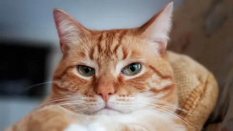

Добро пожаловать на мой сайт!
Это демонстрация различных элементов HTML.
Серые коты!
Характеристика серых котов
Серые коты — это одна из самых популярных и привлекательных категорий домашних кошек. Они обладают уникальной окраской, которая варьируется от светло-серого до почти черного цвета. Внешность таких котов может быть как однотонной, так и с различными оттенками, включая полосы, пятна или даже мраморные узоры. В природе серый цвет у кошек является довольно распространённым и встречается у разных пород.
Кошки — одни из самых загадочных и обаятельных существ на Земле. С давних времен они сопутствовали людям, начиная с Древнего Египта, где их обожествляли и защищали законом, и до наших дней, когда кошка прочно обосновалась в роли члена семьи и верного друга. Что же делает их настолько особенными? Прежде всего, кошки удивляют своей независимостью. Они не требуют постоянного внимания, но при этом способны выражать глубокую привязанность к человеку. Кошка никогда не станет навязываться, но ее тихое присутствие и мягкий мурлыкающий звук создают атмосферу уюта и тепла в доме. Именно эта независимость сочетается с таинственностью, что делает кошек столь притягательными. Когда кошка застывает и пристально смотрит вдаль, кажется, что она видит то, что скрыто от человеческого взгляда. Кроме того, кошки — настоящие мастера релаксации. В среднем кошка спит до 16 часов в день, проводя во сне большую часть своей жизни. Это удивительное умение расслабляться и наслаждаться моментом служит своеобразным примером для людей, напоминая нам о необходимости замедлиться и ценить покой. Но, несмотря на их привычку к покою, кошки также могут быть невероятно активными и игривыми. Когда они носятся по дому с молниеносной скоростью или совершают высокие прыжки, это пробуждает в нас радость и даже некоторую зависть к их свободе и грациозности. Кошки идеально балансируют между грацией и ловкостью, силой и нежностью, игривостью и спокойствием. Таким образом, кошка — это не просто питомец, а маленькая личность с характером, в котором сочетаются противоречивые черты. Именно эта сложность и богатство их натуры заставляют людей веками восхищаться кошками, любить и заботиться о них, считая их частью своей семьи.
Популярные породы серых котов
Серый окрас можно встретить в различных породах кошек, как с короткой, так и с длинной шерстью. Одной из самых известных серых пород является русская голубая кошка, которая славится своим элегантным и стройным телом, а также густым серебристо-серым шерстяным покровом. Эти кошки известны своим спокойным, но в то же время независимым характером.
Еще одной популярной породой является Британская короткошерстная, которая также часто встречается в сером (голубом) окрасе. Британцы имеют круглые, крупные мордочки и густую шерсть. Они дружелюбны, но могут быть немного застенчивыми и независимыми.
Серый цвет шерсти можно также встретить у таких пород как Шотландская вислоухая, Мейн-кун и Норвежская лесная кошка.
Уход за серыми котами
Уход за серыми котами, как и за другими кошками, в первую очередь зависит от породы и длины их шерсти. Например, у короткошерстных серых котов, таких как британские или русские голубые кошки, достаточно регулярного, но не слишком частого расчесывания. Это помогает предотвратить образование колтунов и поддерживать шерсть в хорошем состоянии.
Если у вас длинношерстная серая кошка, например, мейн-кун или персидская кошка, вам нужно будет уделять больше времени на уход за шерстью. Регулярное расчесывание помогает предотвратить спутывание шерсти и поддерживает её здоровый вид.
Кроме того, серые коты склонны к линьке, и особенно это проявляется в весенне-осенний период. Для снижения количества шерсти на мебели и в воздухе можно использовать специальные щетки и пылесосы для животных.
Не забывайте о регулярных ветеринарных осмотрах, поскольку серые кошки, как и любые другие домашние животные, могут иметь предрасположенность к различным заболеваниям, таким как болезни почек или проблемы с зубами.
Рыжие коты!
Особенности внешности рыжих котов
Рыжие коты — это одни из самых ярких и запоминающихся представителей семейства кошачьих. Их насыщенный рыжий цвет может варьироваться от светло-оранжевого до темного, почти красного. Такой окрас появляется благодаря гена, отвечающему за «рыжую» пигментацию, который влияет на шерсть кошки. Рыжие коты часто имеют полоски, пятна или же однородный окрас, который в зависимости от породы может выглядеть по-разному.
Многие из рыжих кошек обладают золотистыми глазами, что делает их внешний вид особенно выразительным. Внешний вид рыжих котов не оставляет равнодушным никого, а их яркий цвет шерсти делает их похожими на маленькие солнышки, привлекая внимание.
Популярные породы рыжих котов
Среди рыжих котов можно встретить представителей множества пород. Одна из самых известных — это Британская короткошерстная с ярким рыжим окрасом. Эти кошки с округлыми мордочками и густой шерстью часто обладают спокойным и ласковым характером. Они идеально подходят для жизни в семье и считаются отличными компаньонами.
Также рыжий окрас часто встречается у таких пород как Персидская кошка и Мейн-кун. У Мейн-кунов рыжий цвет шерсти может быть особенно эффектным, так как эти крупные кошки имеют густую длинную шерсть и выразительные глаза, что делает их совершенно уникальными.
Характер и поведение рыжих котов
Рыжие коты обладают разнообразным характером, но есть несколько общих черт, которые часто встречаются у этих пушистиков. Множество владельцев отмечают, что рыжие кошки очень игривые, общительные и любопытные. Они любят внимание и часто проявляют активность, что делает их отличными питомцами для людей, которые ищут энергичных и забавных животных.
Некоторые считают, что рыжие коты особенно преданы своим хозяевам и часто показывают свою привязанность. Они могут подолгу сидеть на коленях хозяев или следовать за ними по дому, всегда стараясь быть рядом. Однако, как и у любых других кошек, характер рыжих питомцев может сильно зависеть от их воспитания и индивидуальности.
Список имен для котов
- Мурзик
- Рыжик
- Барсик
- Сэм
- Кеша
- Лаки
- Тигра
- Симба
- Пух
- Боня
|  | Гиперссылка |